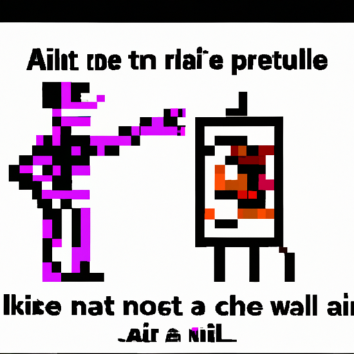

Why AI will never replace the artist
In recent years, AI has become widely used in many industries and has been heralded as a revolutionary tool. There has been much speculation about how AI could disrupt the art world and even replace the artist. While AI has certainly opened up new avenues of creativity, I believe its use in art should be carefully considered and that it will never fully replace the artist.
There is no denying that AI can be used to create art. AI can create digital paintings, generate music, and design 3D sculptures. It can also be used to curate art collections, analyze market trends, and much more. However, I believe that AI's use in the art world should be limited to aiding the artist, not replacing them.
The reason for this is that AI lacks the creative spark and human touch that are essential for creating truly great art. AI can generate images and sounds that are technically impressive, but it cannot reproduce the emotive power of human creativity. As much as AI can help to create visually stunning pieces, it cannot capture the deep meaning and emotion that traditional art can.
Furthermore, while AI can be trained to recognize patterns and mimic existing art styles, it lacks the ability to develop new artistic styles and explore new creative possibilities. The artist's job is to explore and push the boundaries of art, something that AI can never do.
In conclusion, while AI can be used to help artists create stunning visuals and generate unique music, it should not be used to replace them. AI cannot replace the human touch and creative spark that are essential for creating truly great art. AI's role in the art world should be limited to aiding the artist, not replacing them.